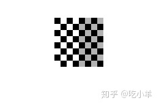
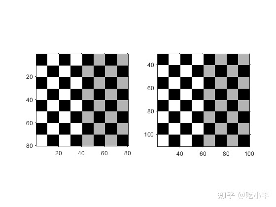
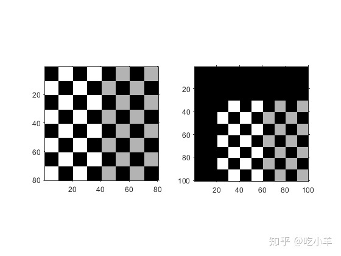

Home
本示例说明如何执行称为平移的简单仿射变换。在平移中，可以通过在x和y坐标上添加指定值来在坐标空间中移动图像。（您也可以使用imtranslate函数执行平移。）
读取要平移的图像。本示例使用该checkerboard函数创建一个棋盘图像。
cb = checkerboard; imshow(cb)

获取有关图像的空间参考信息。当您要显示平移变换结果时，此信息很有用。
cb_ref = imref2d(size(cb))
cb_ref =
imref2d with properties:
XWorldLimits: [0.5000 80.5000]
YWorldLimits: [0.5000 80.5000]
ImageSize: [80 80]
PixelExtentInWorldX: 1
PixelExtentInWorldY: 1
ImageExtentInWorldX: 80
ImageExtentInWorldY: 80
XIntrinsicLimits: [0.5000 80.5000]
YIntrinsicLimits: [0.5000 80.5000]
创建一个3 x 3变换矩阵（在本示例中称为T）来定义平移。在该矩阵中，T(3,1)指定在水平方向移动图像的像素数，T(3,2)指定在垂直方向移动图像的像素数。
T = [1 0 0; 0 1 0; 20 30 1]
T = 3×3
1 0 0
0 1 0
20 30 1
创建定义您要执行的平移的几何变换对象。因为平移变换是仿射变换的特例，所以该示例使用affine2d几何变换对象来表示平移。通过将3×3转换矩阵T传递到affine2d构造函数，来创建affine2d对象。
tform = affine2d(T);
执行转换。调用imwarp函数，指定您要变换的图像和几何变换对象。imwarp返回转换后的图像，cb_translated。此示例还返回可选的空间参考对象cb_translated_ref，其中包含有关转换后的图像的空间参考信息。
[cb_translated,cb_translated_ref] = imwarp(cb,tform);
联合使用subplot和imshow函数，可以并排查看原始图像和变换后的图像。查看平移后的图像时，转换似乎没有效果。转换后的图像看起来与原始图像相同。可视化中没有明显变化的原因是因为imwarp将输出图像的大小调整到足以容纳整个变换图像而不是整个输出坐标空间的大小。但是请注意，坐标值已通过转换进行了更改。
figure; subplot(1,2,1); imshow(cb,cb_ref); subplot(1,2,2); imshow(cb_translated,cb_translated_ref)

要以与原始图像相同的关系查看与坐标空间的原点相同的变换图像的整体，请imwarp与'OutputView'参数一起使用，指定一个空间参考对象。空间参考对象指定输出图像的大小以及输出图像中包含多少输出坐标空间。为此，该示例复制了与原始图像关联的空间参考对象，并修改了世界坐标范围以适应转换后图像的整个尺寸。该示例在世界坐标中设置输出图像的界限，以包括输入的原点。
cb_translated_ref = cb_ref; cb_translated_ref.XWorldLimits(2) = cb_translated_ref.XWorldLimits(2)+20; cb_translated_ref.YWorldLimits(2) = cb_translated_ref.YWorldLimits(2)+20; [cb_translated,cb_translated_ref] = imwarp(cb,tform,'OutputView',cb_translated_ref); figure, subplot(1,2,1); imshow(cb,cb_ref); subplot(1,2,2); imshow(cb_translated,cb_translated_ref)

======================================================================
我的测试结果及程序
下面是我测试的代码：

注：本文根据MATLAB官网内容修改而成。